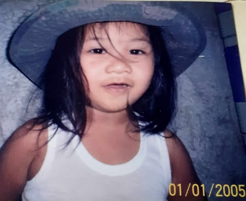
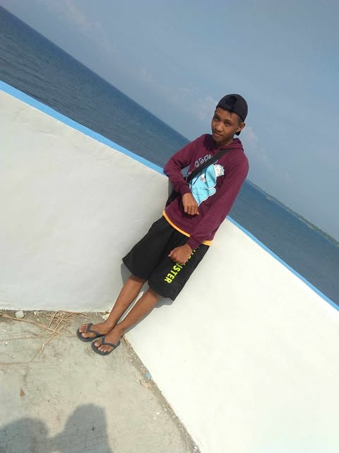
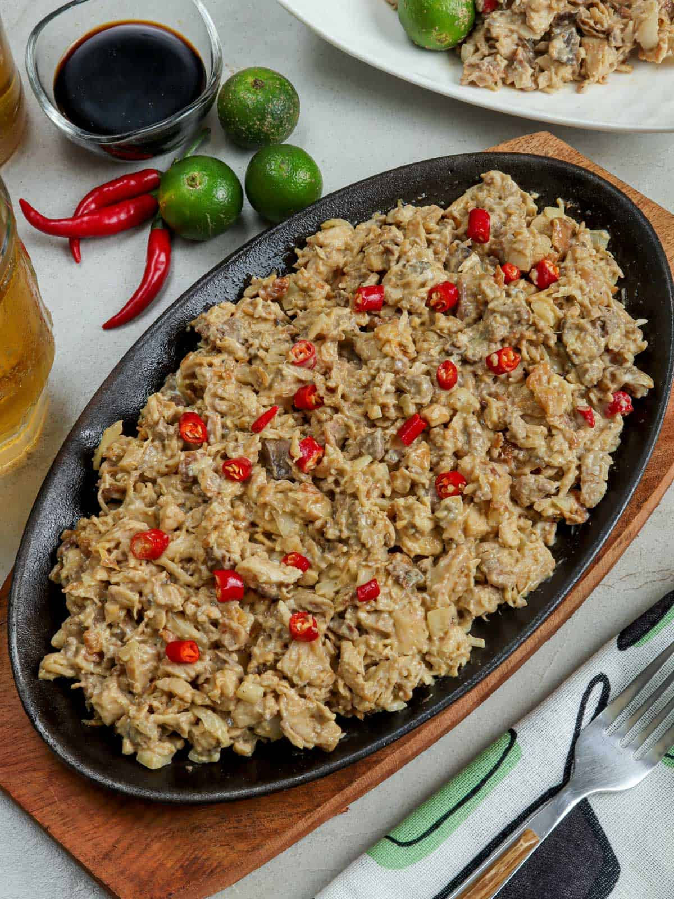

Home
About Myself
Basic Information
Name:Kevin Jun A. Maestro
Data of Birth: November 12, 2004
Place of Birth: Butuan City
My Life Story
Childhood
i like to play with my school mate every afternoon as i remember i have no problem those day.
Teenage Years
this year it change everthing in my childhood because the time goes by the more understand things in reality.
Adulthood
this is a present day i've trying to study because i want to catch up my learning and my grades.
Hobbies
Hobbie
Indoor hobbies
playing online games in phone.
Outdoor hobbies
visit to grandma.
Favorites
My favorite in food
my favorite food is lumpia and sisig.
Favorite Artist
my favorite artist is johhny deep.
Friends
Close Friend
today close friend its hard to find.
College friends .

This is my college friend.